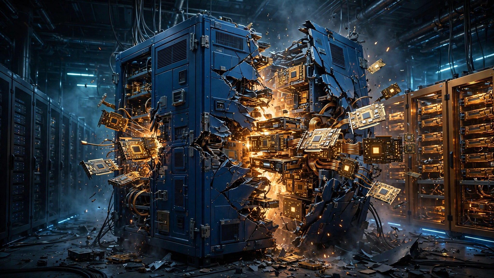

IBM’s Worst Day in 115 Years: AI Infrastructure Just Ate $66.5 Billion of Software Market Cap
Enterprise clients shifted their quarterly budgets from software licenses to servers and memory chips. IBM lost more market cap in one day than ServiceNow, Intuit, and Workday are worth combined.

$66.5 billion. That is how much market value IBM lost on Tuesday after CEO Arvind Krishna told investors something they did not want to hear: enterprise clients are pulling money out of software deals and spending it on AI hardware instead. Shares cratered 25%, worse than Black Monday in 1987, making it the single darkest trading day in IBM’s 115-year history as a public company, a collapse so steep it rewrites the assumptions baked into every enterprise software valuation on Wall Street.
At first glance, the proximate cause looks like a garden-variety revenue miss, with IBM reporting preliminary second-quarter revenue of $17.2 billion against a consensus estimate of $17.9 billion, a gap of roughly $700 million that pulled infrastructure revenue down 7 percent year over year when analysts had penciled in a 2.7 percent decline and dragged adjusted earnings to $2.93 per share versus the $3.01 Wall Street expected.
None of those numbers, taken alone, would justify a quarter-trillion-dollar company losing a quarter of its value before lunch. What spooked the market was why the revenue disappeared.
A Capex Pivot Nobody Modeled
“In the last few weeks of June, we saw clients shift their quarterly capex spend toward servers, storage, and memory purchases to secure supply-constrained infrastructure ahead of expected price increases,” Krishna wrote in a letter to shareholders. “While we anticipated some supply-chain related impact in our expectations, we did not anticipate the magnitude of the capex reprioritization.”
That last clause is the most expensive confession in enterprise software this year, because it means IBM, a company that has spent 115 years selling technology to large corporations, was blindsided by how fast those same corporations are reallocating their IT budgets toward AI infrastructure, not next year and not as part of a strategic review but in the final weeks of a single quarter, with budget dollars ripped from committed software deals and redirected to hardware purchase orders while the ink on the licensing contracts was still drying.
Markets responded with a 95-to-1 punishment ratio: for every dollar of revenue IBM missed, investors destroyed $95 of equity value, a multiplier roughly ten times the 5-to-10x correction typical of software earnings misses and one that signals not a quarterly stumble but a repricing of what the company is worth on a go-forward basis.
A Zero-Sum Scoreboard
Capital did not vanish. It moved. On the same day IBM lost $66.5 billion in market capitalization, the beneficiaries of the AI hardware boom posted gains that tell the other side of the story.
| Company / Index | July 14 Move | Sector |
|---|---|---|
| IBM | −25.0% | Enterprise software / infrastructure |
| iShares Software ETF | −4.0%+ | Software sector |
| Microsoft | −2.0% | Enterprise software |
| Salesforce | −4.0% | Enterprise software |
| Intuit | −5.0% | Enterprise software |
| SK Hynix | +18.0% | Memory / AI infrastructure |
| Roundhill Memory ETF | +6.0% | Memory chips |
| Nvidia | +2.5% | AI chips |
Not a market crash. Not even close. Goldman Sachs gained 7 percent on the same Tuesday that IBM cratered, the S&P 500 finished green, and every major memory chipmaker rallied because the clients who stopped buying IBM mainframe licenses were spending that exact money on servers, HBM chips, and storage arrays for their AI stacks, producing the cleanest sector rotation visible in public equities since the dot-com buildout redirected telecom capex into internet infrastructure.
Sizing the Reallocation
IBM’s infrastructure segment generates roughly $3.55 billion per quarter, and a 7 percent decline where 2.7 percent was expected means the “surprise” component attributable to capex reprioritization rather than the anticipated mainframe cycle is about 4.3 percentage points, which translates to roughly $153 million in one quarter from one vendor.
Small number, enormous implications. Gartner’s 2026 forecast puts the global enterprise software market at approximately $694 billion per year, and if a 4.3-percentage-point capex shift is occurring across the sector (the simultaneous software ETF decline, the Microsoft and Salesforce drops, and the inverse memory-chip surge all suggest it is not IBM-specific), the implied reallocation runs on the order of $30 billion per year being redirected from software licenses and services toward AI hardware.
Even halving that estimate on the assumption that IBM is twice as exposed as the average enterprise software vendor still yields $15 billion per year, a figure larger than ServiceNow’s entire annual revenue and exceeding the combined revenue of Datadog, Snowflake, and Confluent, which means this is not a rounding error but a structural repricing of how corporations spend money on information technology, happening quarter by quarter, deal by deal, in the final weeks before CFOs close their books.
Why 2026 Is Not 1987
IBM’s previous worst day was October 19, 1987, when shares fell 23.7 percent alongside an S&P 500 that dropped 20.5 percent and a Dow that lost 22.6 percent in a market-wide panic triggered by portfolio insurance unwinds and liquidity failures that dragged every stock lower regardless of fundamentals.
On July 14, 2026, the S&P 500 went up. Goldman Sachs posted its best day in months while the Dow, dragged lower by IBM’s weight in the index, rose on a market-cap-weighted basis excluding IBM, and memory chipmakers surged across every Asian and American exchange. Not a contagion event. A verdict.
In 1987, IBM fell because the world was falling. In 2026, IBM fell because the world was moving on without it, rotating capital from legacy software stacks into the silicon and photonics infrastructure that AI workloads demand, and punishing the companies caught standing on the wrong side of that rotation with a ferocity that has no precedent in the enterprise technology sector.
Anthropic’s Mythos Compounds the Squeeze
Krishna’s letter contained a second admission that received less attention: businesses are also prioritizing cybersecurity spending given recent breakthroughs in AI hacking abilities, with Krishna pointing specifically to Anthropic’s Mythos model, which has demonstrated the ability to expose vulnerabilities in enterprise software and encryption systems that traditional security audits miss.
Legacy software vendors now face a double bind, with clients simultaneously shifting capex toward AI infrastructure and redirecting opex toward cybersecurity tools to defend against the AI systems their competitors are deploying, squeezing the traditional enterprise software stack from above by infrastructure spending and from below by security spending in a pincer that leaves mainframes, transaction processing, and middleware fighting for a shrinking slice of a budget that used to be theirs by default.
Counterargument at Full Strength
Against reading IBM’s miss as a structural signal, the strongest case is that IBM’s mainframe business was already entering a cyclical downturn, with the z17 mainframe launched in early 2025 and second-quarter 2026 being the first period where year-over-year comparisons hit the z17 launch spike, which means infrastructure revenue was expected to decline and Krishna may be dressing up a cyclical miss in structural clothing to avoid admitting the z17 cycle is exhausted.
Evidence exists for this reading: IBM’s software segment, which includes Red Hat at 11 percent sequential growth, actually posted 5 percent revenue gains, and if AI spending were truly eating all software, Red Hat would be shrinking rather than expanding, suggesting the cannibalizing force targets a specific layer of the enterprise stack (mainframes and their associated transaction-processing software) rather than cloud-native platforms broadly.
If skeptics are right, the 95:1 punishment ratio is a dramatic overreaction to a narrative, and IBM’s stock should recover within a quarter or two as the z17 cycle comparison normalizes. But this argument must contend with the software ETF falling 4 percent on the same day, ServiceNow dropping 3 percent, and Salesforce shedding 4 percent, which means if this were purely an IBM mainframe problem those companies would not have moved, and sometimes the market is not telling a story but reading one correctly.
What We Don’t Know
This analysis relies on IBM’s preliminary numbers and Krishna’s characterization of the miss, with full Q2 results still unreleased and the earnings call scheduled for July 22. We do not know which clients shifted their spending, how many deals were delayed versus canceled, or whether the infrastructure buying was a one-time inventory build ahead of price hikes or a permanent portfolio rebalancing. And the $15–30 billion sector-wide extrapolation assumes IBM’s experience is at least partially representative of the broader enterprise software market, which may overstate the effect if IBM’s mainframe exposure makes it an outlier.
Cleanly separating how much of the infrastructure decline is z17 fatigue versus capex reallocation is also impossible at this stage, since Krishna attributed the miss to “a shortfall in our Z performance and the associated software stack” combined with the capex shift but did not quantify the split, and the real ratio could be 70/30 in either direction.
What You Should Do
If you sell enterprise software: Go read your Q2 pipeline right now, look specifically at deals that were expected to close in late June and did not, and if you see the same pattern IBM described (clients deferring software purchases to secure AI infrastructure supply) you have one quarter to restructure your pricing before Q3 looks identical. Usage-based pricing is more resilient to capex reprioritization than annual license deals because it sits in opex rather than capex budgets, and this is the quarter to accelerate that transition before the market punishes you the way it punished IBM.
If you invest in enterprise software: Watch Q2 earnings from Microsoft on July 22, ServiceNow on July 23, and Salesforce on August 27, because if any of them cite similar “capex reprioritization” language the sector repricing has legs, and if they do not then IBM may be a special case whose ETF selloff was sympathetic noise rather than a leading indicator.
If you are a CIO deciding where to spend: Memory prices rose 23 percent quarter-over-quarter in Q2 2026, GPU delivery lead times stretched to 18 weeks, and buying infrastructure now to lock in current pricing is rational, but cannibalizing your software maintenance and licensing budget to fund it is a short-term play with compounding long-term exposure: deferred software upgrades accumulate into technical debt, and technical debt accumulates into the security vulnerabilities that Anthropic’s Mythos is designed to find.
One Day, 115 Years
IBM’s worst day in 115 years was not caused by a recession, a scandal, or a product failure but by enterprise clients deciding, in real time, that the future requires more silicon and less software. Whether this is a one-quarter blip or the first visible crack in the enterprise software model depends on what Microsoft, ServiceNow, and Salesforce say over the next six weeks, but the signal from July 14 is unambiguous: when corporations have to choose between AI infrastructure and software licenses, the software is losing, and $66.5 billion in destroyed market value is the price of standing on the wrong side of that choice.